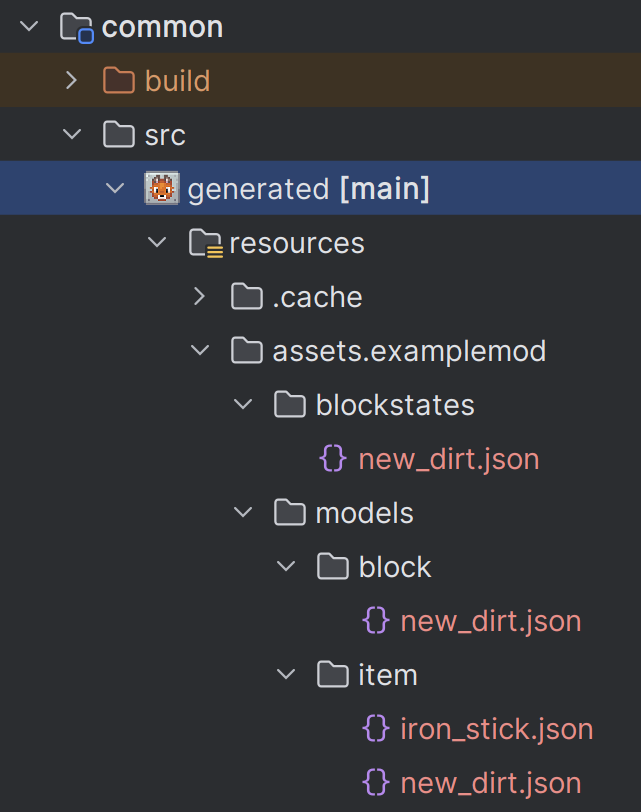

Minecraft Modding Tutorials
Learn the basics, explore advanced techniques, and create mods that transform your Minecraft world. These step-by-step tutorials are designed to make getting into modding Minecraft a bit easier!
Data Generation ‐ Blocks and Items ‐ MultiLoader 1.21+
The next stage in our tutorial series is data generation ‐ specifically looking at generating our block and item models, and our blockstates files.
Common Generation
In this tutorial, we will be using the NeoForge side of the loader to do our generation, as they provide an easy approach for us to do so. However, doing this normally will mean that all our generated resources will be in a generated folder within NeoForge, and when we finish our mod later we will need to copy these over. So to make this easier and avoid the need to do that, we will be generating our resources directly into our common folder.
Next, you should open up your NeoForge build.gradle file. In here we will do two things. First, replace the line at the bottom defining the main source sets with the following line:
sourceSets.main.resources { srcDir file('../common/src/generated/resources').getAbsolutePath() }
Second, you will need to add the following line to your data run configuration beneath the data() method call:
data {
data()
programArguments.addAll '--mod', project.mod_id, '--all', '--output', file('../common/src/generated/resources').getAbsolutePath(), '--existing', file('../common/src/main/resources/').getAbsolutePath()
}
This will tell our data generator to output into the generated resources, but manage any duplicates/conflicts using our existing resources. The last bit for setting up the data generation before we code is to refresh gradle. You can do this by hitting the refresh button in the gradle menu.
Block States and Models
In our NeoForge project, create a new package called data (or whatever you like!). In this package, we will first create a file called ExampleBlockStateProvider that extends BlockStateProvider. This class will be used to generate our Block (and BlockItem) models and BlockState resource files.
Next you want to override the registerStatesAndModels function. Within this function, all we will need to do for now is call simpleBlockWithItem. There are two parameters here, the first being the block to be used for this specific data generation resource, and the second being the model file. If you recall from the Creating Blocks Tutorial, our block parent was cube_all, so we will use this same model here by calling the cubeAll function and passing in our NEW_DIRT block as the parameter.
Your BlockStateProvider should look as follows:
public class ExampleBlockStateProvider extends BlockStateProvider
{
public ExampleBlockStateProvider(PackOutput output, String modid, ExistingFileHelper existingFileHelper) {
super(output, modid, existingFileHelper);
}
@Override
protected void registerStatesAndModels() {
simpleBlockWithItem(BlockRegistry.NEW_DIRT.get(), cubeAll(BlockRegistry.NEW_DIRT.get()));
}
private String name(Block block) {
return this.key(block).getPath();
}
private ResourceLocation key(Block block) {
return BuiltInRegistries.BLOCK.getKey(block);
}
}
You may notice there are a couple more functions I added in here. Feel free to keep this in your own file for now as well, as they will come in handy later down the line!
Item Models
The next step is to generate our item models, and we will create a new file in our data package called ExampleItemModelProvider which extends ItemModelProvider. In this class, we are going to override the registerModels function, and in this function we are going to call the basicItem function which takes in our new item created in the ItemRegistry.
Your provider should look like this:
public class ExampleItemModelProvider extends ItemModelProvider
{
public ExampleItemModelProvider(PackOutput output, ExistingFileHelper existingFileHelper) {
super(output, Constants.MOD_ID, existingFileHelper);
}
@Override
protected void registerModels() {
basicItem(ItemRegistry.IRON_STICK.get());
}
}
Data Generation Event
The final step here is to register our providers to the GatherDataEvent in NeoForge. First, in your NeoForge mod class constructor, add the following line of code:
eventBus.addListener(ExampleMod::gatherData);
This will add a listener for a new function we will create called gatherData in the same file, which will call the event used for data generation and register our providers we just created.
Next, we will create a public static void function called gatherData which takes in the parameter GatherDataEvent. Within this function, you will want to create a try/catch for a RuntimeException and use the event.getGenerator().addProvider to register our providers.
For ease of use, you can see the ExampleMod gatherData function below:
public static void gatherData(GatherDataEvent event) {
try {
DataGenerator generator = event.getGenerator();
PackOutput output = generator.getPackOutput();
ExistingFileHelper existingFileHelper = event.getExistingFileHelper();
generator.addProvider(true, new ExampleItemModelProvider(output, existingFileHelper));
generator.addProvider(true, new ExampleBlockStateProvider(output, Constants.MOD_ID, existingFileHelper));
} catch (RuntimeException e) {
Constants.LOG.error("Failed to generate data", e);
}
}
Now before we can run the NeoForge Data run configuration, we need to delete our existing resources. But wait! Do not delete your textures, just delete the folders for blockstates and models in your common project.
Next, go to your Run Configurations and choose the NeoForge Data configuration. This will run the NeoForge data generator and call our providers we made earlier.
If successful, you should now see a generated or generated (main) folder in your common project which contains your block state, block model and item model we had before, but automatically generated for you. In future, this setup will make this much easier for when you have lots of blocks and items.
BUT WAIT!... My block doesn't drop anything?
In the next tutorial, we will cover Block loot tables and how we can use our data generator for it.
You can find the source for this tutorial here:
View Source